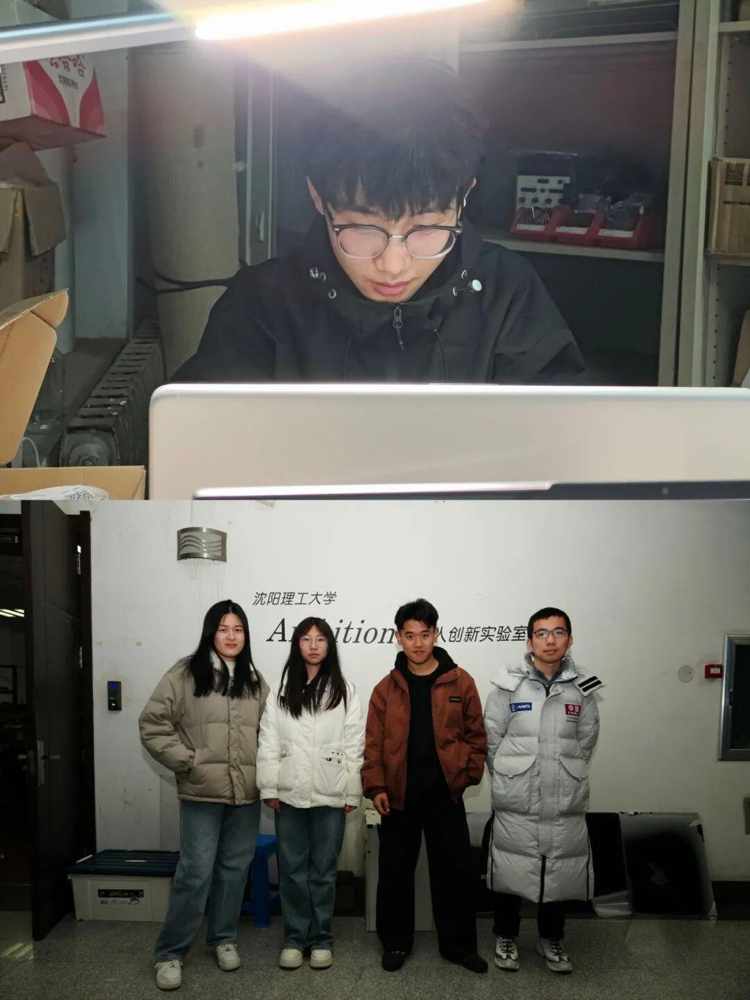
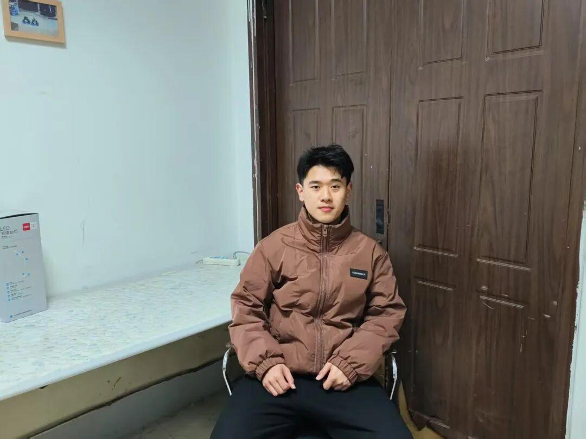

使用小程序
硬件组和运营组
成员专访
— Interview —

PERSONAL RESUME
硬件组成员采访
个人信息
姓名：种子雷
年龄：20岁
籍贯：辽宁省朝阳市
专业：自动化
组别：硬件组
采访ing
● 如何进行硬件测试以确保机器人的性能和稳定？
我认为硬件的测试还有稳定性无非就是它的电源是否稳定，它的信号传输是否稳定。在这一方面，我们会进行大量的测试，这些测试会保证后期的车辆稳定。首先要保证它的稳定性，我们需要在硬件方面用心一些。然后，它的测试需要通过大量的实践来完成。
● 能否分享一些硬件优化前后的对比案例？以及优化带来的集体效果
可以，我们这个硬件优化比如说，我们的前一版超级电容是一个不是双向的buck--boost电路，而是单向的。在我们迭代了几代之后，我们有了双buck-z-boost电路。这种电路比以前的更加的稳定，充放电也更加的完善。
● 在生活工作当中遇到过什么困难？
在工作中，作为硬件组成员，我们会进行大量的测试，对我们研发出来的东西，但是一些测试方面我们找不到问题所在，我们会想出各种的方法，比如第一步我们要用万用表测量它的电源是否接通，然后信号是否传输正确。还有，有一些可能是一些软件方面的知识，我们也会请教电控组的成员来帮助我们。
运营组成员采访
—— 自我介绍 ——

姓名：黄于铭
年龄：19岁
籍贯：湖北省大冶市
专业：自动化
组别：运营组
采访ing
请简要介绍战队宣传组的主要职责与目标
我们战队宣传组的主要职责与目标是通过多样的宣传手段来提高战队的知名度与关注度，当然，我们还负责战队的队内事务，比如说战队队服还有战队周边的设计工作。我们目标主要是通过我们的宣传手段来吸引更多大一、大二的人才来加入我们，为战队注入新鲜的血液。当然在我们RM比赛中，我们宣传组，也就是运营组也是会进行一项评分的，我们希望通过我们的多种宣传手段能够提高我们的分数，能取得更高的得分。
在内容方面，有哪些独特的创意和方法来吸引受众的注意？
在内容创作方面，我们的创作主要有三大方向，视频、推文还有海报。对于推文来讲，我们一般会采用比较简洁的模板，比如说黑白或者浅色系的模板来进行推文的创作，通过这种浅色模板可以让看的人能够更好地了解到我们推文里面的内容，不会形成一种喧宾夺主的感觉。然后海报，我们会在网上进行一个选材的工作，比如说，选择一些适合我们海报主题的图案，加入到我们海报当中，然后还会在海报当中加入我们战队的一些元素，比如队徽和机器人。通过这种手段来提高我们战队的知名度。最后一个就是视频，因为视频的受众比较广泛，我们的视频主要是给那些对我们战队不了解的人看，能够更多地吸引他们来加入我们的战队，所以我们会采用一些网络上比较火的一些梗，或者一些比较热门的创作方式来对视频进行二次加工。
在平时的宣传中，要如何平衡专业性与趣味性
就拿我们大一的一次比赛讲吧，那次比赛是循迹小车的比赛，对于那个比赛我们需要做一个推文，但是那个推文它需要包含一写专业的名词，还有一些超出我们认知范围的知识，所以会比较晦涩难懂一些。我们采用图片加视频的方法，进行推文的制作。然后在推文的文字上，我们也会下一些功夫，比如说，加入一些比喻或者拟人的手法，来使文字更加的通俗易懂，让人看完之后能够更加快速更加轻易地理解文字中的内容，然后汲取到其中的知识。
日常工作中遇到过什么挑战和趣事
在平时日常工作中，最令我头疼的问题就是推文。推文的文案一直是我最大的短板，因为我的语言功底比较差。对于这个问题，我一般都是采用看一看战队往年的一些推文，从中汲取一些灵感。或者看一看其他战队优秀的推文，毕竟每个人的长处不一样，他们的推文可能会做得更好，我们也可以从中汲取他们的优点，来提高我们自己的创作水平。
战队中一些比较有意思的时候就是我们战队到其他学校去进行交流的时候。在那个时候，我们战队队员就会相对来说比较欢快一点，战队的氛围比较好。然后我们也可以和其他的学校的宣传进行交流，交流一些心得，也能提高我们自己的自身能力。
无论是硬件组还是运营组，每个人都是战队不可或缺的一部分。正是大家的齐心协力和不懈努力，才让Ambition战队更加强大。期待在未来，我们能配合默契，勇往直前！
-END-
推文|青唐三月
图片|Ambition战队运营组
审核|XX敏